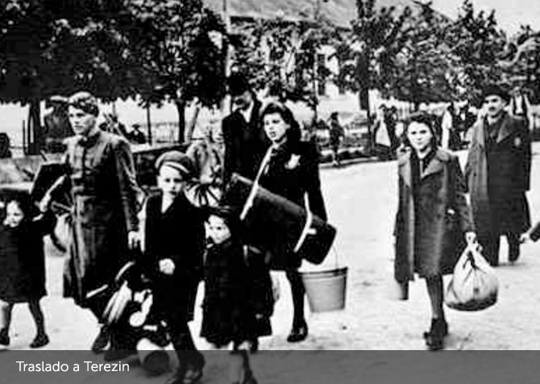
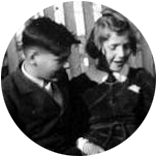

Hana y George juegan en su patio
Cada día aparecían nuevas prohibiciones y restricciones para los judíos.
No podían ir al cine, no podían jugar en la plaza ni en los parques, prohibido ir al gimnasio y a patinar en el lago.
También se les prohibió ir a la escuela y los amigos que al principio prometieron continuar visitándolos, lentamente dejaron de hacerlo ya que sus padres se lo prohibían.
Hana y George sentían que su mundo se volvía cada vez más pequeño.
Estaban enojados, tristes y frustrados.
En 1941 Marketa y Karel fueron arrestados y los niños vieron a sus padres por última vez.
Quedaron solos y pasaron a vivir escondidos con un tío que era cristiano hasta que el 14 de mayo de 1942 fueron citados para ser deportados al campo de Terezín.